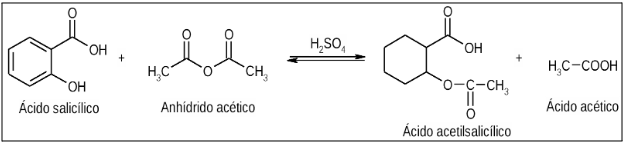
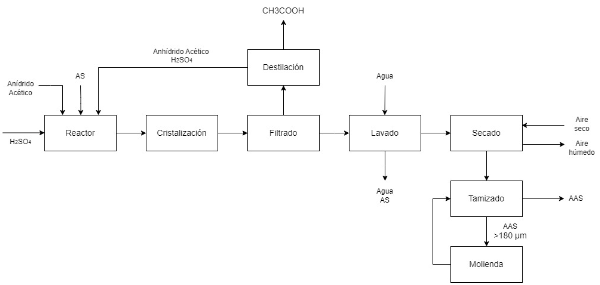
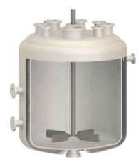
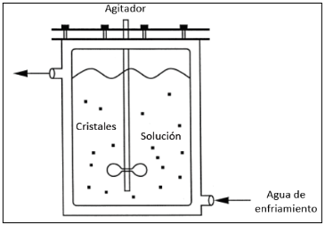
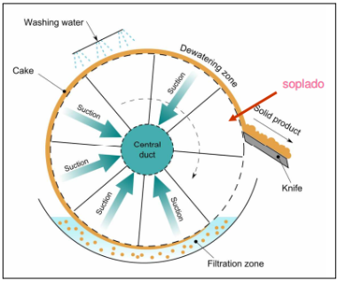
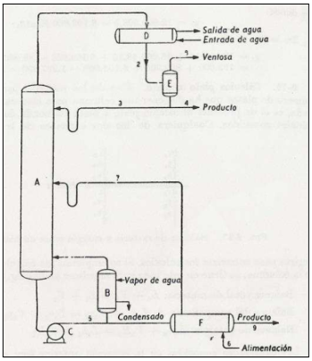
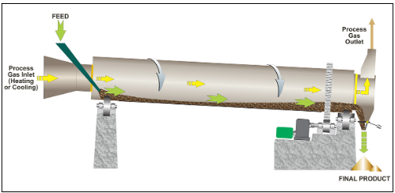
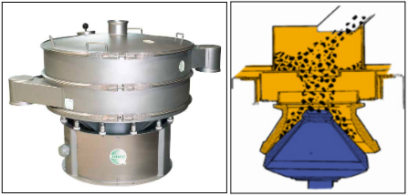

El ácido acetilsalicílico, o más conocido por su nombre comercial Aspirina, es una sustancia de la familia de los salicilatos, usado habitualmente en la medicina como antiinflamatorio, analgésico, antipirético y anticoagulante.
Se sintetiza mediante la esterificación, en medio ácido sulfúrico, del ácido salicílico con anhídrido acético , obteniendo ácido acético como subproducto de reacción.
A continuación, se observa el mecanismo de reacción para la producción de aspirina.
El proceso productivo de formulación de aspirina se visualiza en la siguiente imagen:
El mismo consiste en 8 etapas: reacción, cristalización, lavado, destilación, secado, tamizado, molienda y almacenamiento.
Se cargan los reactivos a un tanque agitado que verifica la reacción de acetilación a 90°C y presión atmosférica durante dos horas. Logra una conversión de ácido salicílico del 93%.
El contenido del reactor se vuelca en un cristalizador enfriado a 30°C que permite la formación y crecimiento de cristales de AAS.
Los cristales formados caen a un filtro de tambor rotatorio que permite lavar y separar la mezcla en tres corrientes: una corriente húmeda de aspirina, el líquido de lavado con salicílico sin reaccionar y una corriente con anhídrido acético, catalizador y subproducto.
La corriente de anhídrido, sulfúrico y acético se lleva a una torre de destilación que permitirá separar dichos compuestos basándose en sus temperaturas de ebullición. El ácido acético hierve a 118°C y se obtendrá como subproducto por cima, mientras que el anhídrido y el sulfúrico caen al fondo por su menor volatilidad. Esta corriente es recirculada al reactor.
La aspirina humedecida se transporta hacia un secadero rotatorio que permite remover la humedad utilizando aire a 85°C. Se tolera un porcentaje de humedad de hasta 0,05%
Con el objetivo de obtener la granulometría adecuada según Farmacopea, de 180 µm, se lleva el sólido seco a un tamiz que separa las fracciones mayores y menores a este valor. Aquellos cristales que poseen un tamaño de partícula mayor al especificado se dirigen a un molino cónico para cumplir con los requisitos establecidos.
Los cristales son finalmente empaquetados en bolsones y almacenados a condiciones atmosféricas, listos para ser entregados al cliente. Se ha obtenido un producto con una pureza del 99,5%.
Volver a nuestros productos